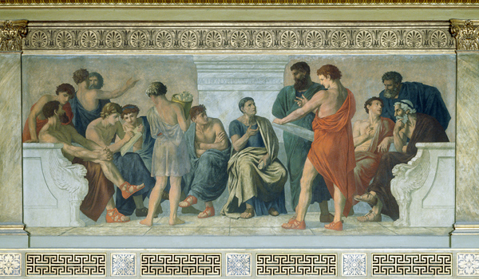

Zašto Peripatetika?

Peripatetička škola je naziv za neformalna okupljanja starogrčkih filozofa Aristotelovog doba. Svrha tih okupljanja, otvorenih ljudima svih kasti i pozadina, bila je poučavanje i slobodno proučavanje filozofskih i znanstvenih teorija.
Etimologija naziva škole povezuje i naglašava mjesto i metodu predavanja. S jedne strane, "predavanja" su se, zbog Aristotelove navodne sklonosti da predaje u hodu, odvijala u Liceju omeđenom kolonadama (grč. \(\pi \varepsilon\rho\acute{\iota}\pi\alpha\tau\omicron\iota\), hrv. kolonade) i na atenskim šetnicama. Jedna od njih nosi naziv Peripatos (grč. \(\Pi \varepsilon\rho\acute{\iota}\pi\alpha\tau\omicron\varsigma\), hrv. šetnica). S druge strane, metodologija tih predavanja je često zrcalila njihov fizički aspekt pa su ona sama nalikovala na intelektualna vrludanja u potrazi za shvaćanjem.
Tko su bili peripatetici?
Peripatetička su predavanja često poprimala formu dijaloga tokom kojih su preispitivana uvjerenja i naizgled etablirane činjenice, kategorizirani fenomeni, ostvarivani zaključci. Usto su rast i razvoj ideja bili pospješeni i formatom peripatetičke metode. Naime, zamijenivši statična predavanja sa pijedestala za dinamična predavanja u hodu te uklonivši tako rigidnu strukturu predavač-učenik, olakšana je dijalektička izmjena ideja.
Pokušaji građenja vlastitih argumenata i objašnjenja svijeta počinjući od očitih, konkretnih, općeprihvaćenih koncepata (tzv. endoxa) uzemljavali su peripatetike i, uz njihovu naklonost kategoriziranju, dovodili su do novih struktura znanja čija je vjerodostojnost bila mjerena, umjesto stupnjem poštovanja dogmi, time koliko je novootkriveno znanje njima i ljudima oko njih bilo smisleno. Pritom je svaki endoxon bio podložan promjenama ili, rjeđe, čak odbacivanju ukoliko je razvoj misli to zahtijevao.
U tom smislu o njima možemo razmišljati kao o "filozofima lutalicama".

Metoda bloga Peripatetika
Blog smo nazvali Peripatetika zato jer nam se svidjela misao o razvijanju koncepcije svijeta vrludanjem prostranstvima ideja inzistirajući ponajprije na smislenošću i uzemljenosti početnih i završnih pozicija. Poanta nije subverzija ni tradicija ni modernih viđenja, već njihova sofistikacija kako bi se pronašao način da ih se pomiri i sintetizira u točkama trenja ili naizgledne oprečnosti. Smatramo kako se do toga može doći odvajanjem žita od kukolja, ali uvijek samorefleksivno imajući na umu koje kriterije upotrebljavamo kako bi nešto nazvali žitom a nešto kukoljem.
To u praksi znači da na ovom blogu nećemo nužno u startu znati odgovore na naša pitanja, a iskreno, često najvjerojatnije nećemo znati ni pitanje. I prvo i potonje ćemo vjerojatno iskopavati iz hrpe početnih premisa i hipoteza, šta naših, šta tuđih. Samim time možete očekivati nedorečene objave, objave koje završavaju pitanjem ili objave koje opovrgavaju prijašnje s obzirom kako se naše nedovršene misli budu razvijale.
Vrsta sadržaja bloga
Očito, budući da živimo sada a ne u nekom drugom vremenu, naša će perspektiva biti ona "modernog čovjeka". Kao i svih, i nas zanimaju odgovori na pitanja koje se Čovjek uvijek pitao: "Kako funkcionira svijet?", "Kako svijet uklopiti u vlastiti život i kako život uskladiti sa ostatkom svijeta?" i naravno, najbitnije: "Zašto?". Odgovore na ta veoma općenita pitanja pokušavaju dati znanost, filozofija i religija. O znanosti znamo nešto malo, o filozofiji nešto manje, a o religiji gotovo ništa.
Ali to nas neće spriječiti da ipak kažemo barem nešto!